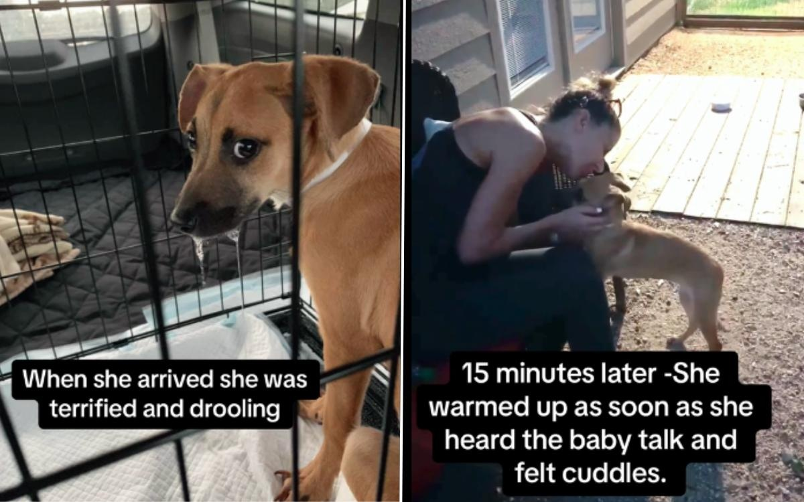

'Aggressive' Puppy Who Faced Euthanasia Transformed by Foster Carer's LoveA shelter puppy who was at risk of euthanasia after being labeled aggressive has undergone an incredible transformation after being fostered. Kelly Williams runs Kelaroo's Ruff Ranch, a nonprofit organization focused on saving abandoned and abused dogs in Texas. She took to TikTok (@k9kelaroo) to share the story of Arizona, or Azzy for short, the dog she rescued from a Houston animal shelter as a scared puppy four years ago. "She was at risk of euthanasia," Williams told Newsweek. "She was so terrified and she was noted as 'snapping and biting at the leash.' We offered to foster her to work with her." The original plan was for Williams to help prepare Azzy for a move to another shelter in Colorado, where she would stand a better chance of being adopted. However, things quickly changed once they met. Though some shelter dogs are more troubled and complex than others, there is ample evidence that something as simple as petting one of these canines can have a significant impact on their overall well-being. A 2018 study published in Applied Animal Behavior Science found that just 15 minutes of petting was enough to boost the well-being of a shelter dog. If that is what can be achieved in 15 minutes, just think what a couple of weeks of care can do to the well-being of a dog. In the case of Azzy, it changed everything. When she first arrived with Williams, Azzy was not in a good way. "She was terrified and drooling," Williams said. "She was snapping through the cage when she arrived and didn't want us near her." Williams has 19 dogs and has fostered many more across her 15-acre home. She had seen her fair share of troubled canines, though, and was not about to give up on this one. "I took her into a secure yard and put all the other dogs inside," Williams said. "I opened her crate and let her run out. She went potty and looked around to see how she could escape. All the while, I did what I always do... sang 'Amazing Grace.'" Something about the singing calmed Azzy, and eventually she walked over to her. "There is not a dog alive that doesn't respond to singing," Williams said. "It's like some innate thing we must have as souls... Lullabies as babies calmed us; well, songs do the same for the dogs." Once Azzy initiated contact, Williams began to shower her with praise and affection. Within 10 minutes, Azzy was a dog transformed. Over the next two weeks, she progressed even further. "She came out of her shell and was spoiled rotten," Williams said. "Cooked chicken, her own room, lots of love and buddies to play with." Finally, the time came to say goodbye, with Azzy heading off for a chance at a new life in Colorado. Though it had only been a couple of weeks, Williams was devastated. "I cried," she said. "I felt sick and worried for her, as she did not want to go, and her face broke my heart." Not long after returning home, however, Williams got a call saying there was a problem. "Azzy had shut down, was terrified in the kennel and was trying to bite anyone that would go near her," she said. Azzy was making it all but impossible for her to be safely transferred to Colorado. It was suggested that perhaps she needed more time with Williams to adjust to the move, but her foster carer had other ideas and was already on her way back to Azzy. "When I got there, she was ecstatic," Williams said. "She curled right up in my arms. That feeling... There is nothing else you can do but take them home and protect them forever. So we adopted Azzy." Now happy living among Williams' canines, Azzy even has a pit-bull best friend. The initial trauma she faced as a puppy means she is never likely to be comfortable around strangers. But, thanks to the way Williams' home is set up, Azzy will always be safe, secure and, most importantly, happy. "For whatever reason, she decided to bless us with her trust," Williams said. "We will never betray that." Do you have funny and adorable videos or pictures of your pet you want to share? Send them to life@newsweek.com with some details about your best friend, and they could appear in our Pet of the Week lineup. |
 |